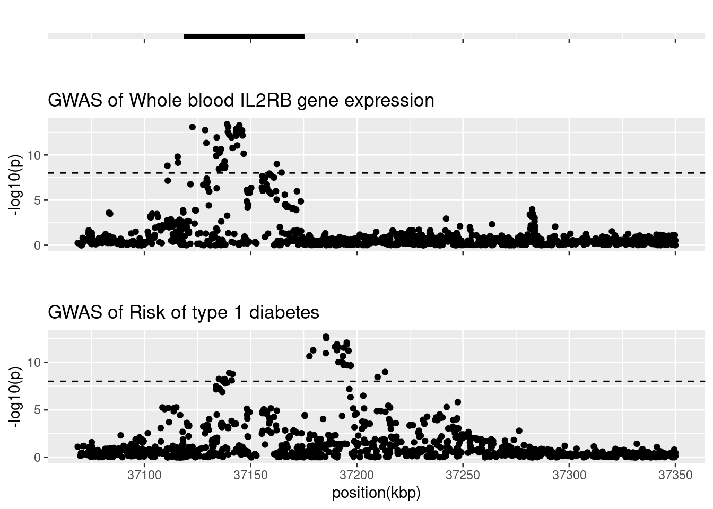

IL2RB
Tea Heikkilä, Emilia Kaiser & Jaakko Koskenniemi
2023-12-01
Last updated: 2024-07-30
Checks: 7 0
Knit directory: 2023-T1DSCREEN/
This reproducible R Markdown analysis was created with workflowr (version 1.7.1). The Checks tab describes the reproducibility checks that were applied when the results were created. The Past versions tab lists the development history.
Great! Since the R Markdown file has been committed to the Git repository, you know the exact version of the code that produced these results.
Great job! The global environment was empty. Objects defined in the global environment can affect the analysis in your R Markdown file in unknown ways. For reproduciblity it’s best to always run the code in an empty environment.
The command set.seed(20220313) was run prior to running
the code in the R Markdown file. Setting a seed ensures that any results
that rely on randomness, e.g. subsampling or permutations, are
reproducible.
Great job! Recording the operating system, R version, and package versions is critical for reproducibility.
Nice! There were no cached chunks for this analysis, so you can be confident that you successfully produced the results during this run.
Great job! Using relative paths to the files within your workflowr project makes it easier to run your code on other machines.
Great! You are using Git for version control. Tracking code development and connecting the code version to the results is critical for reproducibility.
The results in this page were generated with repository version d7fb2bb. See the Past versions tab to see a history of the changes made to the R Markdown and HTML files.
Note that you need to be careful to ensure that all relevant files for
the analysis have been committed to Git prior to generating the results
(you can use wflow_publish or
wflow_git_commit). workflowr only checks the R Markdown
file, but you know if there are other scripts or data files that it
depends on. Below is the status of the Git repository when the results
were generated:
Ignored files:
Ignored: .Rhistory
Ignored: .Rproj.user/
Ignored: IL-6-example.svg
Ignored: IL-6-signaling-infographic-v2-extra-spacing-around-trans.svg
Ignored: IL-6-signaling-infographic-v2.pdf
Ignored: IL-6-signaling-infographic-v2.svg.2024_05_18_21_52_31.0.svg
Ignored: IL-6-signaling-infographic.pdf
Ignored: IL-6-signaling-infographic.png
Ignored: IL-6-signaling-infographic.svg
Ignored: IL6ST-eQTL_coloc-sensitivity.png
Ignored: analyses/figure/
Ignored: data/export_celltypes_harmonized/IL2RA_Spleen_TwoSampleMR.csv
Ignored: data/export_celltypes_harmonized/IL2RA_bin_TwoSampleMR.csv
Ignored: data/export_celltypes_harmonized/IL2RA_bmem_TwoSampleMR.csv
Ignored: data/export_celltypes_harmonized/IL2RA_cd4et_TwoSampleMR.csv
Ignored: data/export_celltypes_harmonized/IL2RA_cd4nc_TwoSampleMR.csv
Ignored: data/export_celltypes_harmonized/IL2RA_cd4sox4_TwoSampleMR.csv
Ignored: data/export_celltypes_harmonized/IL2RA_cd8et_TwoSampleMR.csv
Ignored: data/export_celltypes_harmonized/IL2RA_cd8nc_TwoSampleMR.csv
Ignored: data/export_celltypes_harmonized/IL2RA_cd8s100b_TwoSampleMR.csv
Ignored: data/export_celltypes_harmonized/IL2RA_monoc_TwoSampleMR.csv
Ignored: data/export_celltypes_harmonized/IL2RA_nk_TwoSampleMR.csv
Ignored: data/export_celltypes_harmonized/IL2RA_nkr_TwoSampleMR.csv
Ignored: data/export_celltypes_harmonized/IL6R_Pancreas_TwoSampleMR.csv
Ignored: data/export_celltypes_harmonized/IL6R_Spleen_TwoSampleMR.csv
Ignored: data/export_celltypes_harmonized/IL6R_bin_TwoSampleMR.csv
Ignored: data/export_celltypes_harmonized/IL6R_bmem_TwoSampleMR.csv
Ignored: data/export_celltypes_harmonized/IL6R_cd4et_TwoSampleMR.csv
Ignored: data/export_celltypes_harmonized/IL6R_cd4nc_TwoSampleMR.csv
Ignored: data/export_celltypes_harmonized/IL6R_cd4sox4_TwoSampleMR.csv
Ignored: data/export_celltypes_harmonized/IL6R_cd8et_TwoSampleMR.csv
Ignored: data/export_celltypes_harmonized/IL6R_cd8nc_TwoSampleMR.csv
Ignored: data/export_celltypes_harmonized/IL6R_cd8s100b_TwoSampleMR.csv
Ignored: data/export_celltypes_harmonized/IL6R_dc_TwoSampleMR.csv
Ignored: data/export_celltypes_harmonized/IL6R_monoc_TwoSampleMR.csv
Ignored: data/export_celltypes_harmonized/IL6R_mononc_TwoSampleMR.csv
Ignored: data/export_celltypes_harmonized/IL6R_nk_TwoSampleMR.csv
Ignored: data/export_celltypes_harmonized/IL6R_plasma_TwoSampleMR.csv
Ignored: data/export_celltypes_harmonized/IL6ST_Pancreas_TwoSampleMR.csv
Ignored: data/export_celltypes_harmonized/IL6ST_Spleen_TwoSampleMR.csv
Ignored: data/export_celltypes_harmonized/IL6ST_bin_TwoSampleMR.csv
Ignored: data/export_celltypes_harmonized/IL6ST_bmem_TwoSampleMR.csv
Ignored: data/export_celltypes_harmonized/IL6ST_cd4et_TwoSampleMR.csv
Ignored: data/export_celltypes_harmonized/IL6ST_cd4nc_TwoSampleMR.csv
Ignored: data/export_celltypes_harmonized/IL6ST_cd4sox4_TwoSampleMR.csv
Ignored: data/export_celltypes_harmonized/IL6ST_cd8et_TwoSampleMR.csv
Ignored: data/export_celltypes_harmonized/IL6ST_cd8nc_TwoSampleMR.csv
Ignored: data/export_celltypes_harmonized/IL6ST_cd8s100b_TwoSampleMR.csv
Ignored: data/export_celltypes_harmonized/IL6ST_dc_TwoSampleMR.csv
Ignored: data/export_celltypes_harmonized/IL6ST_monoc_TwoSampleMR.csv
Ignored: data/export_celltypes_harmonized/IL6ST_mononc_TwoSampleMR.csv
Ignored: data/export_celltypes_harmonized/IL6ST_nk_TwoSampleMR.csv
Ignored: data/export_celltypes_harmonized/IL6ST_nkr_TwoSampleMR.csv
Ignored: data/export_celltypes_harmonized/IL6ST_plasma_TwoSampleMR.csv
Ignored: data/export_celltypes_harmonized/NA_NA_TwoSampleMR.csv
Ignored: data/export_celltypes_harmonized/TYK2_Pancreas_TwoSampleMR.csv
Ignored: data/export_celltypes_harmonized/TYK2_Spleen_TwoSampleMR.csv
Ignored: data/export_celltypes_harmonized/TYK2_bin_TwoSampleMR.csv
Ignored: data/export_celltypes_harmonized/TYK2_bmem_TwoSampleMR.csv
Ignored: data/export_celltypes_harmonized/TYK2_cd4et_TwoSampleMR.csv
Ignored: data/export_celltypes_harmonized/TYK2_cd4nc_TwoSampleMR.csv
Ignored: data/export_celltypes_harmonized/TYK2_cd4sox4_TwoSampleMR.csv
Ignored: data/export_celltypes_harmonized/TYK2_cd8et_TwoSampleMR.csv
Ignored: data/export_celltypes_harmonized/TYK2_cd8nc_TwoSampleMR.csv
Ignored: data/export_celltypes_harmonized/TYK2_cd8s100b_TwoSampleMR.csv
Ignored: data/export_celltypes_harmonized/TYK2_dc_TwoSampleMR.csv
Ignored: data/export_celltypes_harmonized/TYK2_monoc_TwoSampleMR.csv
Ignored: data/export_celltypes_harmonized/TYK2_mononc_TwoSampleMR.csv
Ignored: data/export_celltypes_harmonized/TYK2_nk_TwoSampleMR.csv
Ignored: data/export_celltypes_harmonized/TYK2_nkr_TwoSampleMR.csv
Ignored: data/export_celltypes_harmonized/TYK2_plasma_TwoSampleMR.csv
Ignored: data/export_cis_sumstats/eqtl_IL6ST-Gather.rds
Ignored: data/import/
Ignored: figures/IL6R-eQTL-T1D-manhattan.png
Ignored: figures/IL6R-pQTL-T1D-manhattan.png
Ignored: figures/IL6R_eqtl.png
Ignored: figures/IL6R_pqtl.png
Ignored: figures/IL6ST_eqtl.png
Ignored: figures/IL6ST_pqtl.png
Ignored: figures/diagram-sc-analyses.svg
Ignored: figures/gtex_coloc_sensitivity/
Ignored: figures/sc_coloc_sensitivity/
Ignored: submission/
Untracked files:
Untracked: .figure-modifications.swp
Untracked: 21062024 Glucagin manuscript HK_JT.docx
Untracked: Attached file_ 24-0231-Heikkila-ed-EL-KT_vk240724.docx
Untracked: ESM.docx
Untracked: ESMT1Dscreen_vk240724.docx
Untracked: Figure-changes.pdf
Untracked: IL-6-signaling-infographic-v3.pdf
Untracked: IL-6-signaling-infographic-v3.svg
Untracked: README.txt.1
Untracked: Rebuttal.docx
Untracked: STROBE-MR-checklist-fillable(2).docx
Untracked: Supplementary Table X.docx
Untracked: analyses/Tissue-atlas-analyses.Rmd
Untracked: celltypes_scQTL_coloc.tar.gz
Untracked: coloc-sensitivity-IL2RA-cd4eff.png
Untracked: coloc-sensitivity-spleen-IL2RA.png
Untracked: coloc-sensitivity_IL2RA-CD8em.png
Untracked: data/export_LDmat/
Untracked: data/get-data
Untracked: drawing.svg
Untracked: halli.svg
Untracked: input_scQTL_coloc.tar.gz
Untracked: md5sum.txt.1
Untracked: plot_coloc_comb.R
Untracked: sc-results.csv
Untracked: wget-log
Untracked: wget-log.1
Untracked: wget-log.2
Unstaged changes:
Modified: T1DSCREEN.Rproj
Modified: code/00-shell-wget-decompress-T1D-and-eQTLgen
Modified: code/01-Functions.R
Modified: figures/IL2RA.png
Modified: figures/IL2RB.png
Modified: figures/JAK2.png
Modified: figures/JAK3.png
Modified: figures/TYK2.png
Note that any generated files, e.g. HTML, png, CSS, etc., are not included in this status report because it is ok for generated content to have uncommitted changes.
These are the previous versions of the repository in which changes were
made to the R Markdown (analyses/IL2RB.Rmd) and HTML
(docs/IL2RB.html) files. If you’ve configured a remote Git
repository (see ?wflow_git_remote), click on the hyperlinks
in the table below to view the files as they were in that past version.
| File | Version | Author | Date | Message |
|---|---|---|---|---|
| Rmd | 3a52e70 | Jaakko Koskenniemi | 2024-07-30 | Fixed path to LD matrix, moved packaged loading to functions.R |
| Rmd | 1ae5083 | teehei | 2023-12-04 | Added ) |
| Rmd | 1458f89 | jkoskenniemi | 2023-12-01 | corrected the date |
| html | a4a6c97 | jkoskenniemi | 2023-12-01 | Added all files within docs/ |
| html | e8630b5 | jkoskenniemi | 2023-11-29 | Removed old files |
| Rmd | 99be834 | jkoskenniemi | 2023-11-29 | Updated handling data and data scripts |
| Rmd | 9b9a19e | EmiliaKaiser | 2023-06-26 | functional variants code |
| Rmd | 6d22c1e | EmiliaKaiser | 2023-06-09 | updated gene positions and data |
| Rmd | c8769f4 | EmiliaKaiser | 2023-06-08 | updated analyses |
| Rmd | 9d2c121 | EmiliaKaiser | 2023-06-08 | updated analyses scripts |
| Rmd | 5fff409 | jkoskenniemi | 2023-06-06 | Updated analyses scripts |
| Rmd | ed8bb66 | jkoskenniemi | 2023-05-06 | functional programming added to result scripts |
| html | 7e5b296 | jkoskenniemi | 2023-05-04 | Build site. |
| Rmd | f709349 | jkoskenniemi | 2023-05-04 | Fixed SNP referencing in coloc |
| Rmd | e751cb5 | jkoskenniemi | 2023-05-04 | added eQTL to data, harmonization and analyses |
| html | 84179cf | jkoskenniemi | 2023-05-04 | Build site. |
| Rmd | bda8c3f | jkoskenniemi | 2023-05-04 | wflow_publish(all = TRUE, republish = TRUE) |
| html | bda8c3f | jkoskenniemi | 2023-05-04 | wflow_publish(all = TRUE, republish = TRUE) |
| html | a4fff74 | jkoskenniemi | 2023-05-04 | Build site. |
| Rmd | bfe9a3f | jkoskenniemi | 2023-05-04 | wflow_publish(all = TRUE, republish = TRUE) |
| html | bfe9a3f | jkoskenniemi | 2023-05-04 | wflow_publish(all = TRUE, republish = TRUE) |
| html | 6ce427e | jkoskenniemi | 2023-05-03 | Build site. |
| Rmd | d5d8257 | jkoskenniemi | 2023-05-03 | Added eQTL data, corrected an error in coloc sensitivity figures |
| html | 1a5d3d3 | jkoskenniemi | 2023-04-28 | Build site. |
| html | c8d146f | Jaakko Koskenniemi | 2023-04-26 | Build site. |
| html | 57ee62a | Jaakko Koskenniemi | 2023-04-25 | Build site. |
| Rmd | 2c387a1 | Jaakko Koskenniemi | 2023-04-25 | First commit |
| html | 24d77f3 | Jaakko Koskenniemi | 2022-11-05 | Build site. |
| Rmd | e86595d | Jaakko Koskenniemi | 2022-11-05 | wflow_publish(c("analyses/CRP.Rmd", "analyses/CXCL10.Rmd", "analyses/IL2RA.Rmd", |
Load packages and import data
here::i_am("analyses/IL2RB.Rmd")here() starts at /home/jajoko/Documents/2023-T1DSCREENsource("code/01-Functions.R")eQTL
IL2RB_eqtl <- import_data("data/export_harmonization/IL2RB_eqtl_TwoSampleMR.csv",
"data/export_harmonization/IL2RB_T1D_TwoSampleMR.csv", has_beta = TRUE)Harmonising Whole blood IL2RB gene expression (4vucPG) and Risk of type 1 diabetes (xN25Oe)Removing the following SNPs for being palindromic with intermediate allele frequencies:
rs10427673, rs10775741, rs11089827, rs116948647, rs12162647, rs12484612, rs130618, rs131832, rs132932, rs1534879, rs1534880, rs1569489, rs2012725, rs2179229, rs2267338, rs2284054, rs2284055, rs2285109, rs228957, rs228958, rs228965, rs2413430, rs2413440, rs2413441, rs2413464, rs2413465, rs2543514, rs2858484, rs3026677, rs33997421, rs34262500, rs3788533, rs3827355, rs3891103, rs4239881, rs4289289, rs4437064, rs4821566, rs4821570, rs4821582, rs4821600, rs4821615, rs4821630, rs4821635, rs56371899, rs5750285, rs5750333, rs5750339, rs5750401, rs5750431, rs5756345, rs5756380, rs5756389, rs5756414, rs5756415, rs5756487, rs5756510, rs5756519, rs5756627, rs5756667, rs5756669, rs5756828, rs5995414, rs6000819, rs6000855, rs61604391, rs62230511, rs6572, rs7285437, rs738985, rs76328603, rs8135493, rs9306317, rs932326, rs9607373, rs9607391, rs9610714, rs9610808, rs9610810, rs9619688, rs9622654, rs9622670Initial Manhattan plots
manhattan_plots(IL2RB_eqtl, gene_start=37118666, gene_end=37175118, title = "IL2RB")
IL2RB_eqtl <- IL2RB_eqtl %>% filter(pos.outcome > 37068000 & pos.outcome < 37350000)
manhattan_plots(IL2RB_eqtl, gene_start=37118666, gene_end=37175118, title = "IL2RB")
| Version | Author | Date |
|---|---|---|
| a4a6c97 | jkoskenniemi | 2023-12-01 |
#ggsave("figures/IL2RB-eQTL-T1D-manhattan.png", height = 6, width = 6)Coloc assuming 1 causal variant
coloc_results_IL2RB_eqtl <- analyze_coloc_eqtl(IL2RB_eqtl)PP.H0.abf PP.H1.abf PP.H2.abf PP.H3.abf PP.H4.abf
2.05e-15 1.36e-07 1.51e-08 9.97e-01 2.59e-03
[1] "PP abf for shared variant: 0.259%"Results fail decision rule H4 > 0.7
# coloc_results_IL2RB_eqtl$coloc_D1D2 #coloc results
# coloc_results_IL2RB_eqtl$D1 #data eQTL
# coloc_results_IL2RB_eqtl$D2 #data t1dRegional manhattan plot
load("data/export_LDmat/IL2RB_eqtl_LDmat.rda")
plot_coloc(genechr = 22,
fig_start = 37068000,
fig_end = 37350000,
coloc_results = coloc_results_IL2RB_eqtl$coloc_D1D2,
data = IL2RB_eqtl,
D1 = coloc_results_IL2RB_eqtl$D1,
D2 = coloc_results_IL2RB_eqtl$D2,
LDmat = IL2RB)Warning: Using `size` aesthetic for lines was deprecated in ggplot2 3.4.0.
ℹ Please use `linewidth` instead.
This warning is displayed once every 8 hours.
Call `lifecycle::last_lifecycle_warnings()` to see where this warning was
generated.Warning: Removed 5 rows containing missing values or values outside the scale range
(`geom_line()`).Warning: Removed 5 rows containing missing values or values outside the scale range
(`geom_label()`).
| Version | Author | Date |
|---|---|---|
| a4a6c97 | jkoskenniemi | 2023-12-01 |
ggsave(filename = "figures/IL2RB.png", height = 8, width = 6)Functional variants
load("data/export_functional_variants/phenoscanner-entries.RDS")
#Find IL2RB missense variants
IL2RB_missense <- functional_variants$IL2RB$results %>%
filter(consequence == "missense") %>%
distinct(rsid) %>% pull()
IL2RB_missense #rs143857582, rs149508414[1] "rs143857582" "rs149508414"#give betas and se for eQTL and T1D risk (note, this is not MR!)
IL2RB_eqtl %>%
filter(SNP %in% IL2RB_missense) %>%
select(SNP, beta.outcome, se.outcome, pval.outcome, beta.exposure, pval.exposure) %>%
mutate(across(!matches(c("SNP", "pval.outcome", "pval.exposure")), function(x) signif(x, digits = 2))) #noneEmpty data.table (0 rows and 6 cols): SNP,beta.outcome,se.outcome,pval.outcome,beta.exposure,pval.exposure
sessionInfo()R version 4.4.0 (2024-04-24)
Platform: x86_64-pc-linux-gnu
Running under: Ubuntu 22.04.4 LTS
Matrix products: default
BLAS: /usr/lib/x86_64-linux-gnu/openblas-pthread/libblas.so.3
LAPACK: /usr/lib/x86_64-linux-gnu/openblas-pthread/libopenblasp-r0.3.20.so; LAPACK version 3.10.0
locale:
[1] LC_CTYPE=en_US.UTF-8 LC_NUMERIC=C
[3] LC_TIME=en_US.UTF-8 LC_COLLATE=en_US.UTF-8
[5] LC_MONETARY=en_US.UTF-8 LC_MESSAGES=en_US.UTF-8
[7] LC_PAPER=en_US.UTF-8 LC_NAME=C
[9] LC_ADDRESS=C LC_TELEPHONE=C
[11] LC_MEASUREMENT=en_US.UTF-8 LC_IDENTIFICATION=C
time zone: America/New_York
tzcode source: system (glibc)
attached base packages:
[1] stats graphics grDevices utils datasets methods base
other attached packages:
[1] RACER_1.0.0 reshape2_1.4.4 ggrepel_0.9.5 viridis_0.6.5
[5] viridisLite_0.4.2 scales_1.3.0 here_1.0.1 rio_1.0.1
[9] ieugwasr_1.0.0 ggpubr_0.6.0 TwoSampleMR_0.6.2 coloc_5.2.3
[13] data.table_1.15.4 lubridate_1.9.3 forcats_1.0.0 stringr_1.5.1
[17] dplyr_1.1.4 purrr_1.0.2 readr_2.1.5 tidyr_1.3.1
[21] tibble_3.2.1 ggplot2_3.5.1 tidyverse_2.0.0 workflowr_1.7.1
loaded via a namespace (and not attached):
[1] tidyselect_1.2.1 farver_2.1.2 fastmap_1.2.0 reshape_0.8.9
[5] pacman_0.5.1 promises_1.3.0 digest_0.6.35 timechange_0.3.0
[9] lifecycle_1.0.4 processx_3.8.4 magrittr_2.0.3 compiler_4.4.0
[13] rlang_1.1.4 sass_0.4.9 tools_4.4.0 utf8_1.2.4
[17] yaml_2.3.8 knitr_1.47 ggsignif_0.6.4 labeling_0.4.3
[21] plyr_1.8.9 abind_1.4-5 withr_3.0.0 grid_4.4.0
[25] fansi_1.0.6 susieR_0.12.35 git2r_0.33.0 colorspace_2.1-0
[29] cli_3.6.2 rmarkdown_2.27 crayon_1.5.2 ragg_1.3.1
[33] generics_0.1.3 rstudioapi_0.16.0 httr_1.4.7 tzdb_0.4.0
[37] cachem_1.1.0 matrixStats_1.3.0 vctrs_0.6.5 Matrix_1.6-5
[41] jsonlite_1.8.8 carData_3.0-5 car_3.1-2 callr_3.7.6
[45] hms_1.1.3 mixsqp_0.3-54 rstatix_0.7.2 irlba_2.3.5.1
[49] systemfonts_1.0.6 jquerylib_0.1.4 glue_1.7.0 ps_1.7.6
[53] cowplot_1.1.3 stringi_1.8.4 gtable_0.3.5 later_1.3.2
[57] munsell_0.5.1 pillar_1.9.0 htmltools_0.5.8.1 R6_2.5.1
[61] textshaping_0.3.7 rprojroot_2.0.4 evaluate_0.24.0 lattice_0.22-5
[65] highr_0.11 backports_1.5.0 broom_1.0.6 httpuv_1.6.15
[69] bslib_0.7.0 Rcpp_1.0.12 gridExtra_2.3 whisker_0.4.1
[73] xfun_0.44 fs_1.6.4 getPass_0.2-4 pkgconfig_2.0.3